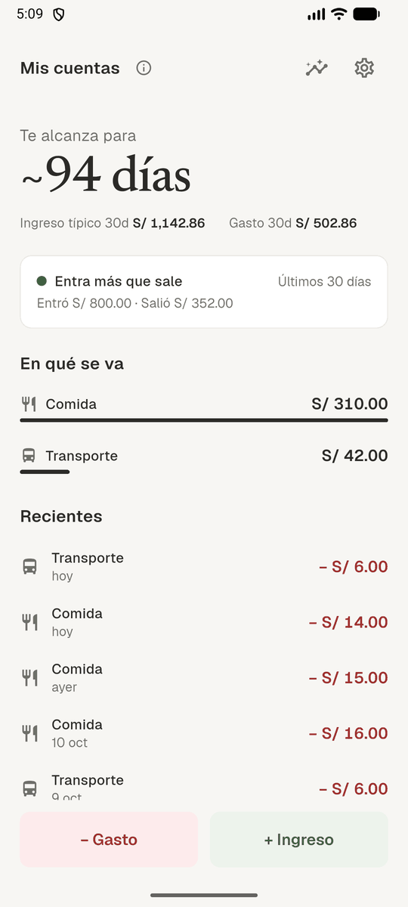

SaldoClaro
Cuánto te alcanza la plata. Para ingresos que cambian cada mes.
Anota tus gastos en dos toques y SaldoClaro te dice cuántos días te alcanza tu saldo con tu ritmo real de gasto. No te pide un ingreso fijo ni día de pago: funciona desde el primer día, aunque tus ingresos cambien cada mes.
Descargar (próximamente)
Un modo para cada realidad
- Estable. Para ingresos predecibles: un pago fijo, la quincena, fin de mes. Ves cuánto te queda de tus techos del mes.
- Variable. Para ingresos que cambian cada mes: chambas, ventas, freelance. Ves cuántos días te alcanza la plata.
- Supervivencia. Para cuando no tienes ingreso fijo ahora. Ves cuántos días te quedan y cuánto gastas al día.
- Tus datos, en tu teléfono. Sin cuenta y sin internet. Si quieres verlos en otro teléfono, activa la sincronización (es opcional).